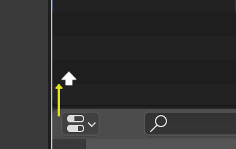

Blender 基础操作
Blender 系列文章是我在学习 Blender 过程中总结的一些笔记，我使用的版本为 Blender 3.2，主要学习源为：
文章中快捷键均指的在 Windows 系统中，一般来说，在 macOS 系统中可使用 Cmd 替代 Ctrl 。
控制视图
- 旋转视角：中键拖拽
- 移动视角：Shift 中键拖拽
- 缩放视角：滚轮或 +、-
数字小键盘
- 7：顶视图，Ctrl 7：底视图
- 1：前视图，Ctrl 1：后视图
- 3：右视图，Ctrl 3：左视图
- 9：反转当前视图
- 5：切换透视、正交视图
- 0：摄像机视图
- 2/4/6/8：前后左右微调视角
注：没有数字小键盘的话，可以使用字母键上方的数字键来模拟，但会导致使用不了这些键的原始功能（比如在编辑模式下快速切换点/线/面模式）。设置方法：
偏好设置 (Preferences) > 输入 (Input) > 键盘 (Keyboard) ，勾选 模拟数字键盘 (Emulate Numpad)
调整摄像机位置角度
先按 N 调出侧栏，在 View 面板中勾选 Lock Camera to View，再调整视图。调整好后记得取消勾选 Lock Camera to View 。
控制物体
- 移动物体：G
- 旋转物体：R
- 缩放物体：S
- 退出命令：右键 或 Esc
- 撤销变换：Alt G、Alt R、Alt S
- 限制方向：X、Y、Z
- 限制平面：Shift X、Shift Y、Shift Z
- 隐藏物体：H
- 显示物体：Alt H
- 隐藏未选中的物体：Shift H
- 添加物体：Shift A
- 复制物体：Shift D
- 删除物体：Delete 或 X
选择工具
- 调整：W
- 框选：B
- 刷选：C
- 套索：L 或 Ctrl 鼠标右键
- 循环选择模式：W
- 全选：A
按住 Shift 加选、减选
调整区域
改变大小： 移动鼠标光标移到两个区域之间的边界，直到它变成一个双向箭头，然后按下左键并拖动。

拆分： 分割一个区域将创建一个新的区域。将鼠标光标放在一个区域的角上，光标会变成一个十字（+），然后按下左键就会激活分割或连接。从一个区域的角向内拖动将该区域拆分。你可以通过水平或垂直拖动来定义分割方向。

合并： 从一个区域的角落向外拖动，将两个区域连接起来。将被关闭的区域会显示一个较暗的浮动层，你可以通过将鼠标移到哪个区域来选择哪个区域将被关闭。释放左键来完成连接。如果你在释放鼠标前按下 Esc 或右键，操作将被取消。

区域选项： 在区域边界按右键打开区域选项。可选择垂直分割、水平分割、合并区域、对调区域。
切换区域最大化： Ctrl 空格
模型编辑
- 切换编辑/物体模式：Tab
- 编辑模式下切换点/线/面选择模式：1/2/3 （开启模拟数字键盘后，无法使用数字键切换选择模式，可直接点击对应的图标按钮进行切换）
- 切换透视/正常模式：Alt Z
- 应用：Ctrl A （尽量在编辑模式下使用缩放，避免在物体模式下使用缩放，如在物体模式下缩放，记得最后需执行应用。）
- 调出属性面板：F9 （生成物体后未进行其他操作时有效）
- 独立显示选中物体：/
- 合并模型：Ctrl J
点线面的选择
- 选择两个元素最短路径：Ctrl
- 选择相连元素：L
- 循环选择：按住 Ctrl 双击，就可选择一个循环边
- 垂直方向的循环选择：Ctrl Alt 双击
订阅： 本站所有内容首发于 tangweijuan.com，支持 RSS 订阅，同步更新于微信公众号「Afterwork Time」，欢迎扫描下方二维码订阅。